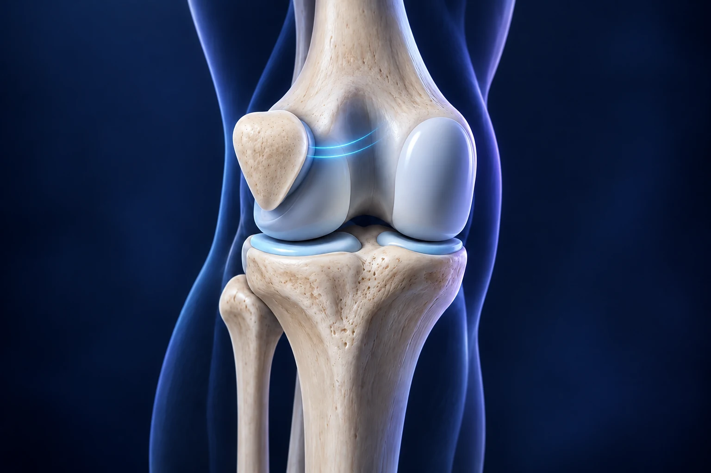

Rotule qui se déboîte : quelle place pour la chirurgie ?

Une luxation de rotule ne nécessite pas systématiquement une opération. En revanche, des épisodes répétés, certaines lésions associées ou des particularités anatomiques peuvent conduire à discuter une stabilisation chirurgicale. Le choix du geste dépend du bilan : reconstruire un ligament et corriger un facteur osseux répondent à des problèmes différents.
Que se passe-t-il lors d’une luxation ?
La rotule glisse normalement dans une gorge située à l’avant du fémur, appelée trochlée. Sa stabilité dépend de la forme des os, des ligaments et du contrôle musculaire. Lors d’une luxation, elle quitte cette trajectoire, généralement vers l’extérieur. Le ligament fémoro-patellaire médial, souvent désigné par les lettres MPFL, participe à limiter ce déplacement. AAOS, instabilité de rotule.
L’image d’un chariot guidé dans un rail aide à comprendre le problème, à condition de se rappeler que le genou est vivant : la forme du rail, les attaches et le contrôle du mouvement interagissent. C’est pourquoi deux personnes présentant le même épisode apparent peuvent avoir besoin de prises en charge différentes.
Que faire lorsque la rotule vient de se déboîter ?
Une rotule déplacée, un genou très gonflé ou une impossibilité de marcher justifie une évaluation rapide. N’essayez pas de remettre vous-même la rotule en place. Même si elle semble être revenue spontanément, l’épisode mérite un examen pour vérifier les lésions et organiser les suites. NHS, luxation de rotule.
Le traitement immédiat et la protection du genou sont décidés après cette évaluation. Une amélioration rapide de la douleur ne prouve pas que toutes les structures ont récupéré. Gardez les documents des urgences et les premières images : ils seront utiles pour la consultation de suivi.
Comment distinguer instabilité et douleur de rotule ?
Une douleur à l’avant du genou ne signifie pas nécessairement que la rotule se luxe. Décrivez précisément les épisodes : déplacement visible, sensation de sortie, gonflement, mouvement déclenchant ou peur de recommencer. Une consultation permet d’examiner ces éléments sans assimiler toutes les douleurs rotuliennes à une instabilité.
Si votre gêne concerne surtout les escaliers ou la position assise, l’article sur les douleurs autour de la rotule apporte des repères complémentaires. Le vocabulaire employé pour raconter les symptômes aide à poser les bonnes questions, sans vous demander de faire votre diagnostic.
Que recherche le bilan ?
L’examen et les images évaluent notamment les attaches ligamentaires, la forme de la trochlée, l’alignement et les éventuelles lésions cartilagineuses. Radiographies, IRM ou scanner sont utilisés selon les informations nécessaires. Une anomalie isolée ne détermine pas à elle seule l’intervention. AAOS, bilan de l’instabilité rotulienne.
Demandez que l’on vous montre les éléments qui expliquent la proposition. La question n’est pas seulement « quel ligament est abîmé ? », mais aussi « quels facteurs favorisent les récidives dans mon genou ? ». Apportez les comptes rendus des épisodes précédents et précisez si l’autre genou a déjà posé problème.
En quoi consiste une reconstruction du MPFL ?
La reconstruction utilise un greffon tendineux pour rétablir une attache entre la partie interne de la rotule et le fémur. Elle vise à limiter le déplacement excessif vers l’extérieur. Ce ligament est différent du ligament croisé antérieur, situé au centre du genou : leurs reconstructions n’ont pas le même objectif. North Tees NHS, reconstruction du MPFL.
Cette opération peut être proposée seule ou s’intégrer à une stratégie plus large selon les caractéristiques du genou. Le nom « ligamentoplastie » ne suffit donc pas à décrire le parcours. Demandez quels gestes sont prévus, pourquoi ils sont nécessaires et comment ils modifieront les suites.
Pourquoi la rééducation garde-t-elle une place centrale ?
Après une reconstruction, la récupération concerne la mobilité, la force et le contrôle du genou. La protection et la progression des exercices suivent les consignes de l’équipe. Une douleur postopératoire et une inhibition du quadriceps peuvent gêner le démarrage ; elles justifient un accompagnement adapté plutôt qu’une comparaison avec un calendrier trouvé en ligne. Royal Berkshire NHS, rééducation après reconstruction du MPFL.
Le retour au sport ne repose pas uniquement sur la cicatrice ou sur l’absence d’un nouveau déboîtement. Il faut retrouver les capacités nécessaires à votre discipline et une confiance suffisante dans les mouvements. La progression doit être discutée avec le chirurgien et le kinésithérapeute ; aucune date standard ne convient à tous les genoux.
Quelles questions poser avant l’intervention ?
Les bénéfices attendus doivent être rapprochés des risques, notamment de raideur, de douleur persistante, d’infection ou de nouvelle instabilité. Les consignes de surveillance et les contacts après la sortie font partie des informations à recevoir. North Tees NHS, intervention et récupération.
Préparez vos objectifs : reprendre un sport, descendre les escaliers sans appréhension ou retrouver une activité professionnelle. Demandez ce que l’intervention peut améliorer et ce qui devra être travaillé en rééducation. Vous pouvez consulter le Dr François Lozach à Sète avec vos images pour discuter de ces options à partir de votre anatomie et de votre histoire.
Ces conseils sont d’ordre général et ne remplacent pas un avis médical personnalisé.